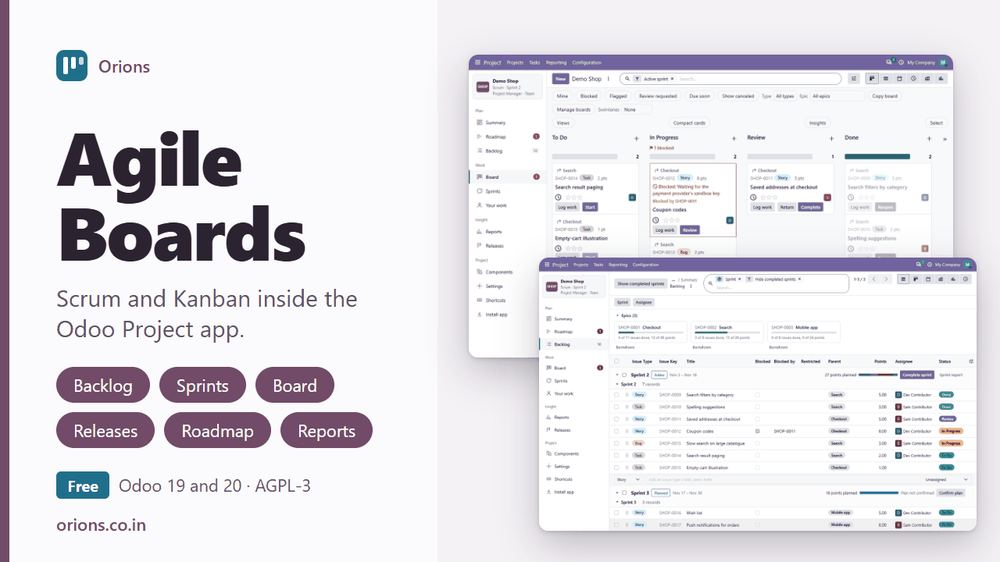
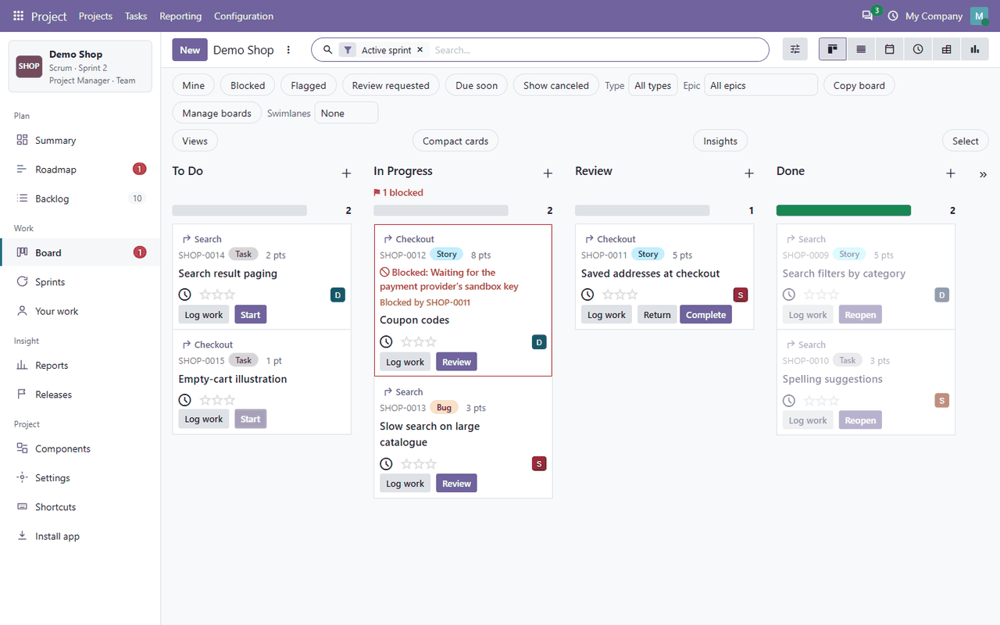
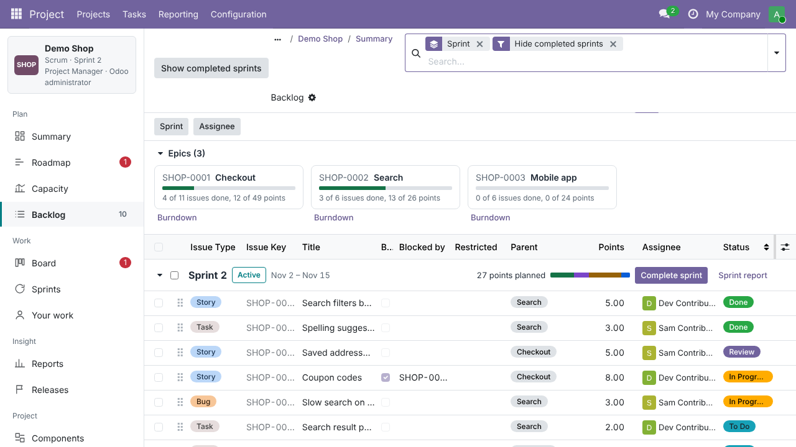
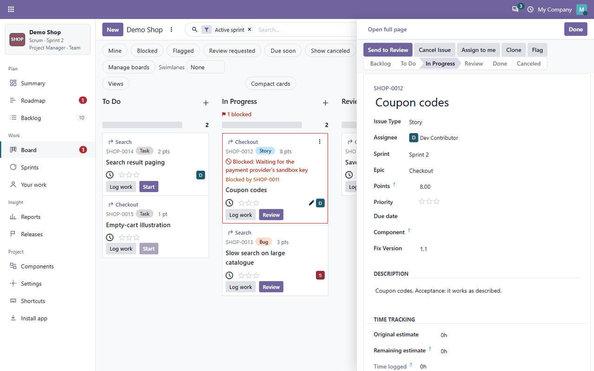
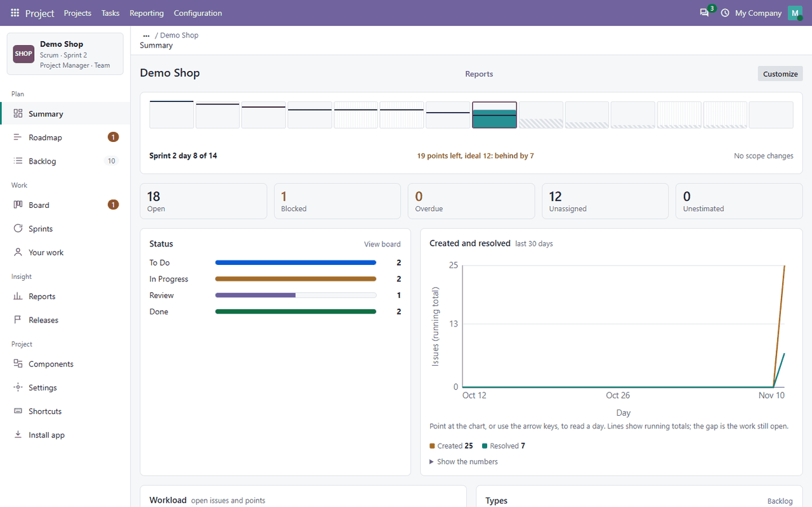
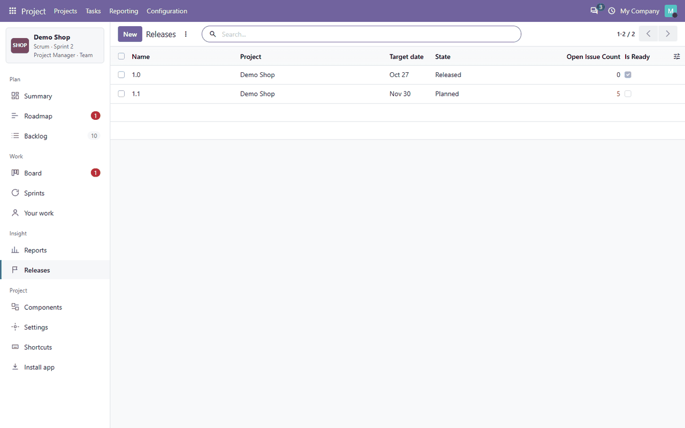
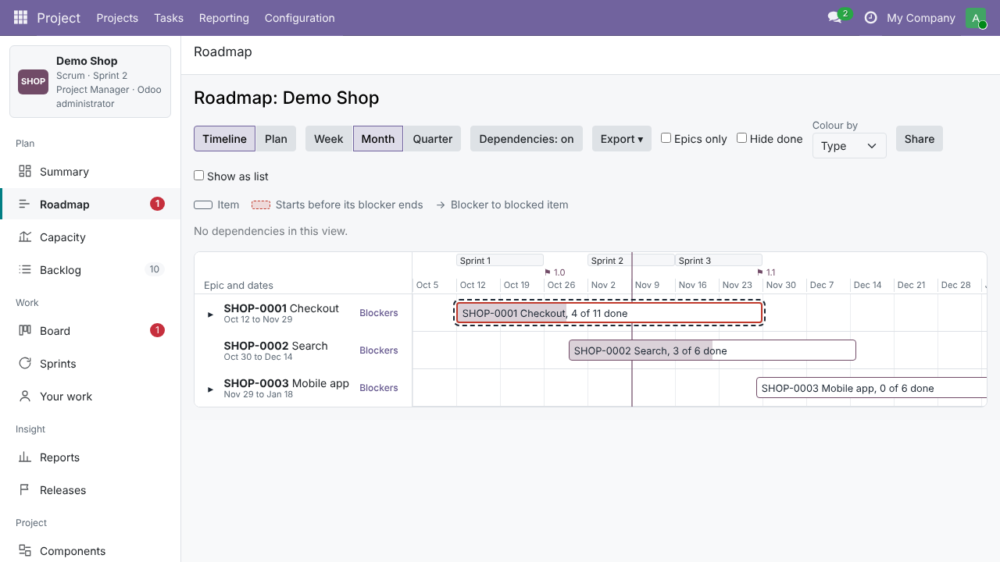
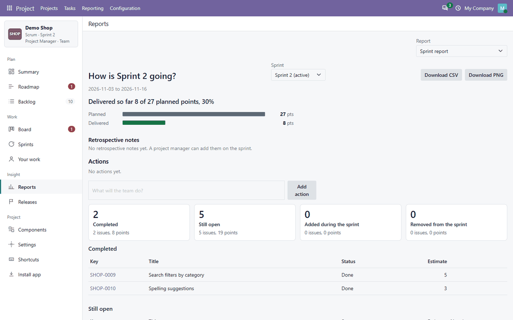
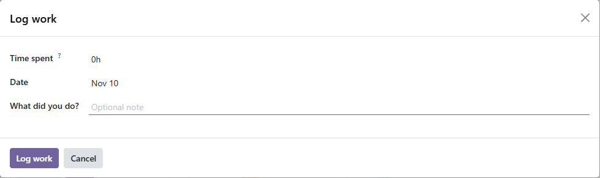
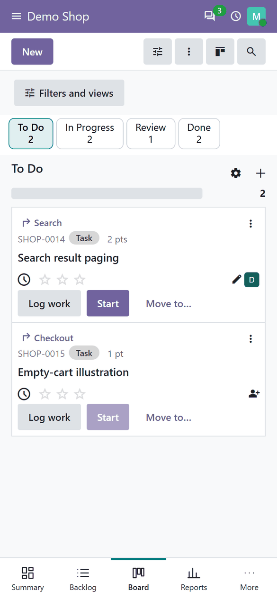

FREE Odoo 19 Odoo 20
Scrum and Kanban boards, backlog, sprints, releases and reports inside the Odoo Project app. No separate tool, no separate login.

Issues are Odoo project tasks. Teams, followers, chatter, timesheets and access rules you already use keep working.
Plan a backlog, confirm a sprint, work a board, complete the sprint and carry unfinished work over, with burndown and velocity.
Managers, contributors, reviewers and stakeholders each see the screens and buttons that fit what they may do.
AGPL-3 licensed, no seat limits, and no data leaves your Odoo. It does not call any outside service.
Every screen below is from the app itself, on the Demo Shop sample project.
Scrum and Kanban boards with drag and drop. Columns follow your workflow, cards show type, points, assignee and blockers, and you can use swimlanes, WIP limits, quick filters and saved views.


Rank issues by dragging them (or with Alt and the arrow keys), group them by sprint, add estimates and edit many issues at once. Create a sprint, confirm the plan, start it, complete it and move unfinished issues on.
Open an issue in a side panel without leaving the board: status buttons, assignee, sprint, epic, points, component, fix version, links, time tracking and a history feed.


The project summary shows the sprint pulse: points left against the ideal pace, open and blocked issues, who has what, and how the work is split by status and type.
Group the issues of a release under a version, set target dates, see how ready it is, and keep release notes with the version.


Epics and releases on a timeline by week, month or quarter, with dependencies and blocked issues marked.
Sprint report, burndown and velocity for each sprint, so you can see what was planned, what was delivered and what carried over.


When the Timesheets app (hr_timesheet) is installed, a Log work button appears on the board card and the issue. It creates a timesheet line for you, and the issue shows the time the timesheets add up to. Without Timesheets you can still log time on the issue itself.
The board has a phone layout with a Move-to menu in place of drag and drop, keyboard shortcuts on the desktop (press ? for the list), and it follows Odoo's dark theme.

Eight steps from install to your first release.
Open Apps, search for Agile Boards and press Install. The sprint, version and timeline building blocks install with it.
Open Project > Projects, open a project and tick Agile on its Settings tab. Choose Scrum or Kanban and give the project a short key such as SHOP.
On the project's Agile team, give each person a role: manager, contributor, reviewer or stakeholder.
Open Backlog, type a title in the quick-add row and press Enter. Set the type, estimate and epic, then drag issues into the order you want.
Create a sprint, move issues into it, press Confirm plan, then start it from the sprint list or the backlog.
Open Board. Move cards with the buttons on the card, by dragging, or from the issue panel. Blocked work is marked in red.
Press Complete sprint in the backlog. Done work stays with the sprint and unfinished issues move to the next sprint or back to the backlog. Open Reports for the sprint report.
Open Releases, create a version, set a target date and link the issues that ship in it. Mark it released when it goes out.
| Role | What they can do |
|---|---|
| Manager | Everything in the project: team, workflows, settings, sprints, releases, plans and every issue move. |
| Contributor | Create and edit issues, rank the backlog, move issues the workflow allows, log work and comment. |
| Reviewer | Work the review queue: return an issue to work or complete it. Does not change plans or settings. |
| Stakeholder | Read only. Follows progress on the board, summary and reports. |
This is the Standard permission scheme. A project manager can switch a project to the Open or Strict scheme, or set a custom one. Nobody sees an Agile project they cannot already open in Project.
No. Without it you log time on the issue. With it, Log work creates timesheet lines and the issue shows their total.
No. A project is only an Agile project once you tick Agile in its settings. Other projects stay as they are.
Yes. Every Agile project has its own board, backlog, sprints, key and team.
Only people who can already open the project in Odoo. A restricted issue is further limited to the people you name.
You choose: move it to the next sprint or back to the backlog.
Yes. The board has a phone layout with a Move-to menu in place of drag and drop.
Website: https://orions.co.in
Support: support@orions.co.in
Please include your Odoo version, the module version and what you clicked. Support is best effort for this free app.